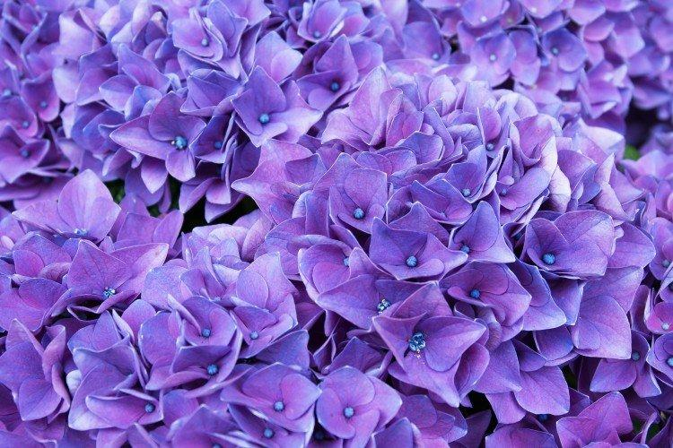

Лаванда — это вечнозеленый кустарник. "Вот её фотография".
Стебель у растения прямой, чуть согнут по краям и покрыт войлочным налетом. На конце он имеет очень узкие цветы светло-серого оттенка, с виду напоминающие колосок, хотя палитра оттенков может варьироваться от голубого до темно-фиолетового. "Посмотрите сюда".
Посмотрите на эту красоту. "Здесь любуйтесь всеми видами!".
А это "пара, гуляющая в поле".
Посмотрите на другие, не менее красивые сиреневые цветы!

Гортензия
Ирисы
Сирень
Гладиолусы
Астильба
Если вы хотите насладиться и увидеть ещё больше сиреневых или фиолетовых цветов, то введите пароль (пароль:0531)